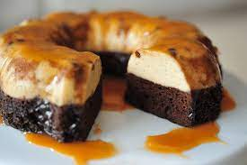
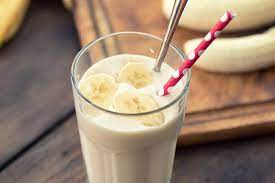

Pan frances con huevo
Waffles

Huevos divorciados.
Huevo revuelto con salchicha.

Chilaquiles.
Avena con fruta
| Imagen | Descripcion | Precio |
|---|---|---|
Pan frances con huevo |
$80 | |
Waffles |
$45 | |
|
Huevos divorciados. |
$45 |
Huevo revuelto con salchicha. |
$35 | |
|
Chilaquiles. |
$80 |
Avena con fruta |
$80 |
| Imagen | Descripcion | Precio |
|---|---|---|
hamburguesa doble con queso |
$80 | |
flautas |
$85 | |
tacos de pastor o bistec |
$80 | |
tostadas con pollo queso y frijoles |
$70 | |
enchiladas suizas de pollo |
$95 | |
torta de bistec con frijoles y aguacate |
$60 |
| Imagen | Descripcion | Precio |
|---|---|---|
lasaña acompañada con pasta alfredo panes de ajo |
$115 | |
 |
Corte de carne con verduras |
$85 |
sincronizada |
$90 | |
 |
pastel de carne |
$85 |
albondigas |
$95 | |
El arroz y los frijoles son una combinación de granos y legumbres muy básica que se expande en una amplia variedad de países y culturas. |
$60 |
| Imagen | Descripcion | Precio |
|---|---|---|
 |
Postre lácteo tradicional, típico de nuestra gastronomía. Se prepara normalmente con huevos enteros, leche y azúcar. |
$30 |
Es un postre delicioso y particular por sus texturas, tiene una base de masa quebrada y una cremosa crema de limón que al momento de juntarse en la boca, desatan una sensación única. |
$30 | |
Pastelillos dulces, pequeños, que tienen una cubierta de chocolate y pueden incluir en su interior trocitos de nuez, chocolate, mantequilla de cacahuate y una variedad de ingredientes. |
$25 | |
 |
Las fresas con nata o crema son un postre y una merienda de origen inglés,que incluye las citadas frutas que se sirven troceadas y bañadas en nata montada con azúcar o bien con nata montada y azúcar moreno salpicada al gusto. |
$60 |
pastel de chocolate delicioso |
$30 | |
|  | Postre con una mitad de delicioso flan y delicioso pastel de chocolate. |
$30 |
| Imagen | Descripcion | Precio |
|---|---|---|
Bebida de elaboración usualmente casera, a base de limón, agua y azúcar |
$25 | |
El jugo de naranja o zumo de naranja es un jugo de frutas en forma de líquido obtenido de exprimir el interior de las naranjas, generalmente con un exprimidor. |
$25 | |
El café es la bebida que se obtiene mediante el percolado de agua caliente a través de los granos tostados y molidos de los frutos de la planta del café (cafeto);es altamente estimulante por su contenido de cafeína,una sustancia psicoactiva. |
$25 | |
|  | El licuado de banana con leche es muy simple de preparar. Un batido que si se desea, se le puede agregar una cucharada de miel o azúcar. |
$30 |
La leche chocolatada, chocolatada, leche de/con chocolate o chocomilk (del inglés chocomilk), es una bebida preparada con leche (vegetal o animal) y cacao en polvo, que puede tomarse fría o caliente. |
$30 | |
bebida refrescante que se prepara normalmente con granos de arroz remojados en agua que después se muelen y se mezclan con agua endulzada; al final se aromatiza con canela. Puede añadirse leche y, ocasionalmente, otros ingredientes. |
$25 |